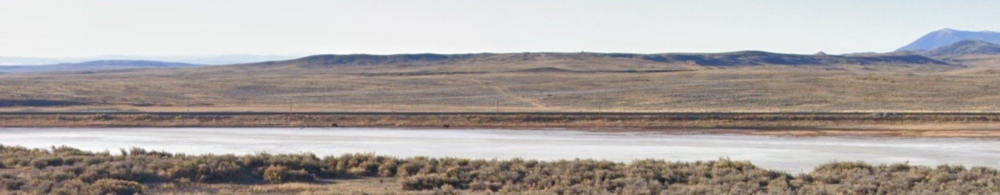

The Conquest of the (Fossilized...) West
Where did it all happen? The Bone Wars left a trail across the American West. These are some of the most iconic sites where Cope and Marsh unearthed dinosaur history...
Our story moves from the East Coast to one of the best places to find fossils in USA: The regions around the canyons of Colorado, Montana, Wyoming, the Dakotas, Kansas and Nebraska.
It is the time of a rapid expansion to the West.
The train is coming, and there is a lot of excavations, also easing the transport of people and cargo (aka bones).
Also there is a lot of interest in surveying all the resources of the area, so understanding the geography and the geology become very important to the central goverment plans.
It is 1868.
The current advances into the West represent new opportunities for those also looking for bones in unexplored areas.
Marsh makes the first move He makes contacts and travel to the surroundings of Como Lake in what is now Wyoming.
The area around Como Lake was not at first a very important source of bones - it will be one of the best later on.
It is now 1870.
Marsh decides to extend his "territories" and places his people on promising old river basins in Dakota...

... Nebraska...

... and Kansas.
1871 - Cope wants also to get some.
Humiliated by the xxxxx xxxxx and by having to support the "unethical" methods carried out by Marsh against him, he decides to "invade" Marsh's "territory".
He focuses on the areas around Smoky Hill, close to the Monument Rocks in Kansas.

But this is Marsh "territory". He sends his assistances to also explore the area.
They both stay concentrated on their portions of "territories" for a few years, attacking each other but maintaining certain distance.
Both get interesting results from the explorations. There is enough material to stay busy.
Busy... but not satisfied. They want more.
For example, Cope joins governmental surveying teams as volunteer and travels to New Mexico...
... and Texas.
He even gets as far as Montana to the Judith River.
This place will be a very productive one after the death of our characters and it is even explored nowadays.

But there is nothing better than some good bones out of the Canyons to keep this war going on.

In 1877, a school teacher and amateur paleontologist from Golden (CL), makes contact with both researchers. He has found bones near Morrison (CL), and want to trade.
Cope returns the contact first...
... but Marsh, who is financially stronger, pays more.
Even bones already in Cope's posession should be returned and sent to Marsh.
The same year Cope is contacted by two different bone hunters, Lucas and Felch, claiming they have found fossils further south, in
The bone hunters also contacted Marsh, though. So he also make camps on the sites.

So far, trying to put out the other has been about paying to get the bones first, attacks to the reputations, and spying.
It is during this time where the teams from both camps begin to batlanty sabotage the activities of each other.
But the area that will make a difference, specially for Marsh, is one he disregarded years before.
Marsh is contacted by two rail workers in the surroundings of Como Bluff. He sends Williston, one of his best assistances who is in Canyon City, to verify.
Willinston talks of big findings, but also confirms that Cope is already there and getting closer.
Marsh rapidly makes a favourable agreement with the rail workers, and begin the diggings.
One year later, Carlin, one of the rail workers, becomes disenchanted with Marsh and joins Cope's team.
Como Bluff will be one of the most productive areas of all so far.

Despite the amount of material, the battle gets nasty, with accusations of spying, stealing and bribery. But also launching stones to each other, or hidding findings, while hurrying all the recovery of existing bones without any systematic extraction.
And might have gone worst: There are sources suggesting that Marsh might have given instructions to his assistances to dynamite sites he considered "exhausted of interesting material", so Cope won't be able to put a hand of possible remainings.
Closing Note.
NO CONTENT
NO CONTENT
NO CONTENT
NO CONTENT
NO CONTENT
NO CONTENT
NO CONTENT
NO CONTENT